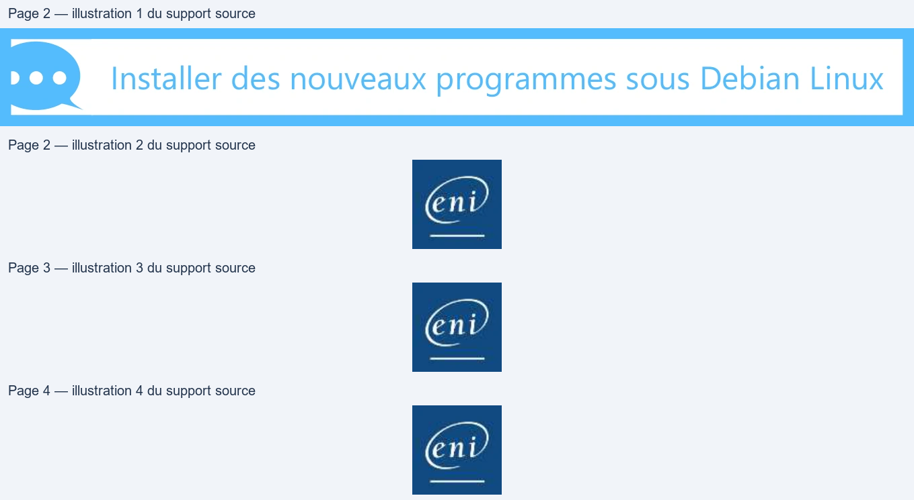
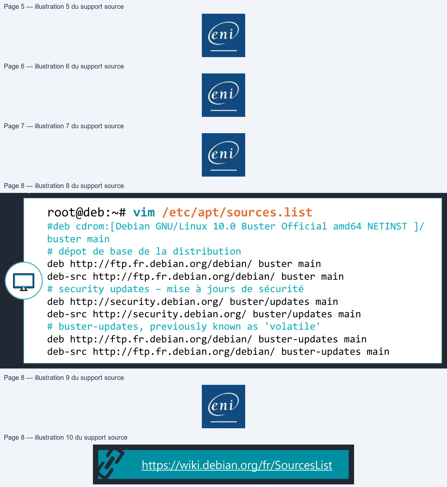
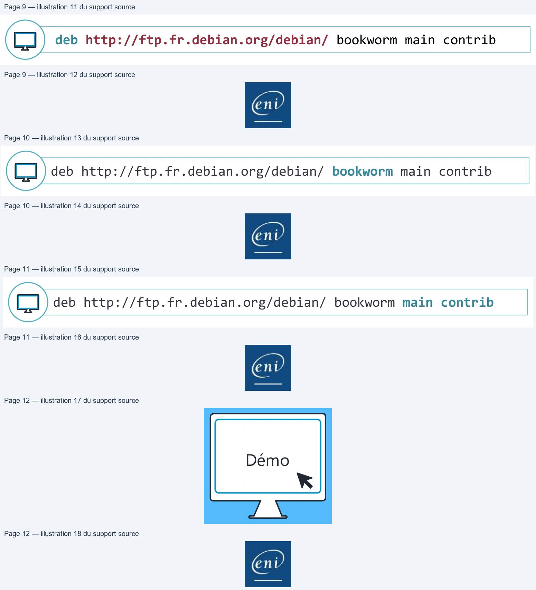
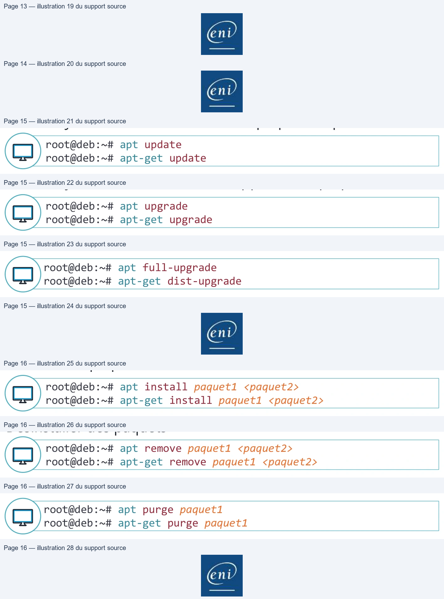
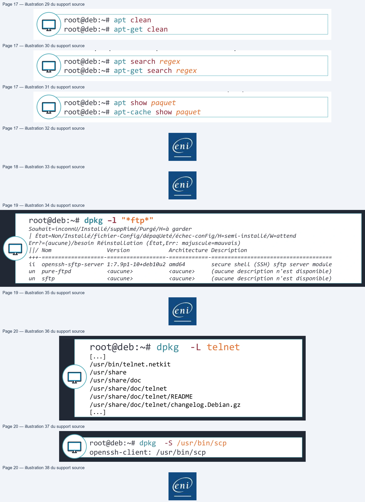
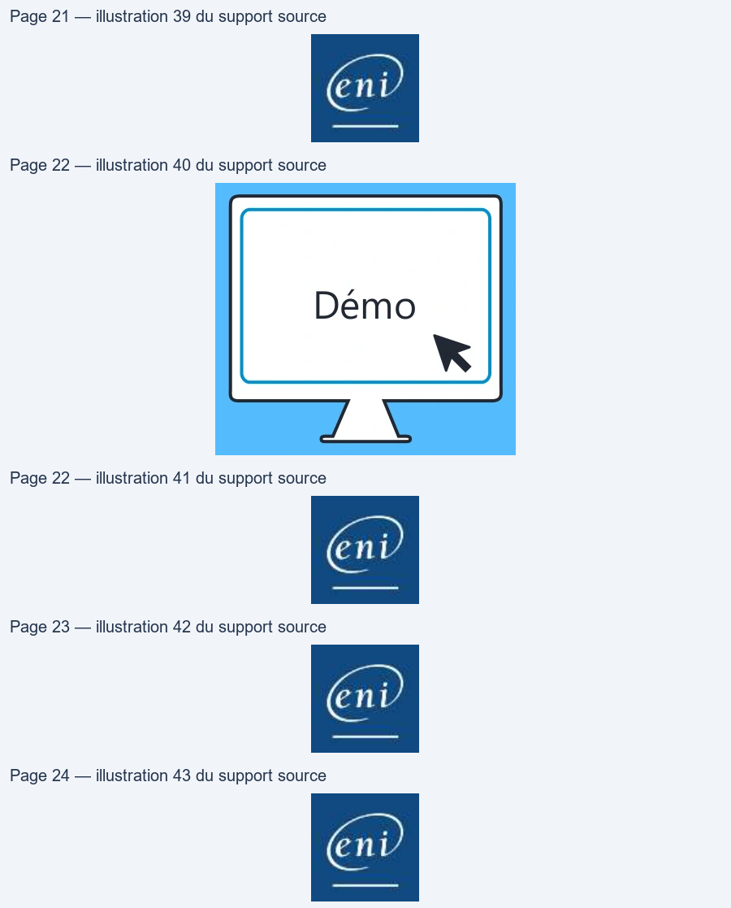
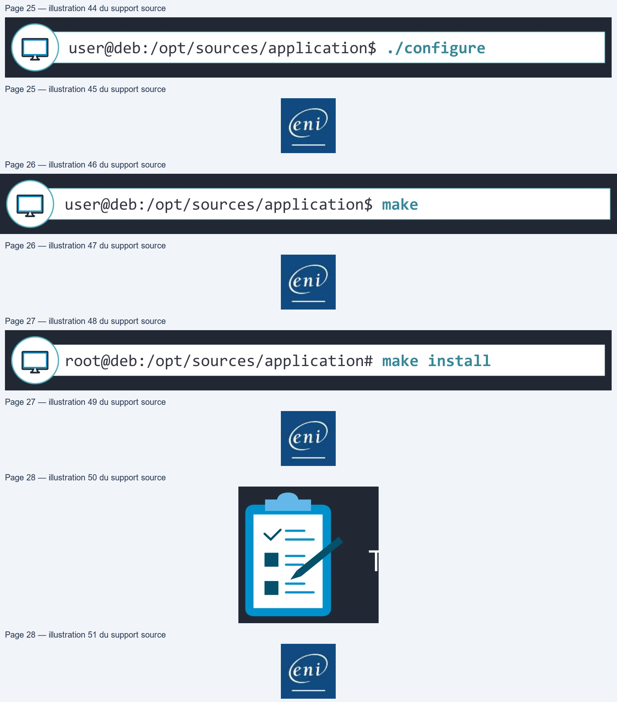
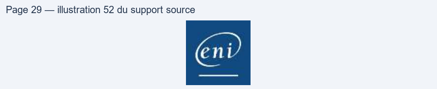

Transcription du document du Drive TSSR. La mise en forme est adaptée au Web ; les compléments IA du portail sont présentés séparément.
End
• Stable : C'est la version de production de Debian, celle qu'il est recommandé
d'utiliser.
• Testing : La branche Testing contient la future version stable de Debian.
• Unstable : Version en constante évolution, (on parle de Rolling release).
La distribution Unstable est toujours appelée Sid

• On peut également noter les branches suivantes :
• Old-Stable : C'est la version de production de Debian antérieure (R -1)
• Old-Old-Stable : C'est la version de production encore antérieure (R-2)
• Experimental : cas particulier, car elle ne contient pas tous les paquets
constituant une distribution complète. Elle contient des paquets de logiciels
en cours de développement.
• Les paquets logiciels, ainsi que leurs sources, sont disponibles sur
Internet dans des dépôts (repository).
• Lorsqu'une machine est installée, les dépôts officiels Debian sont
automatiquement configurés, en fonction de la version installée,
facilitant :
• La mise à jour de toute la distribution : la mise à jour pourra être une mise à
jour de sécurité ou une mise à jour complète du système et de la totalité
des paquets la composant ;
• L'installation de nouveaux paquets : il n'est pas nécessaire de chercher sur
Internet un site de téléchargement pour l’installation des paquets, le
gestionnaire de paquet s'en charge tout seul.
Le fichier /etc/apt/sources.list contient la configuration des dépôts.
root@deb:~# vim /etc/apt/sources.list #deb cdrom:[Debian GNU/Linux 10.0 Buster Official amd64 NETINST ]/ buster main # dépot de base de la distribution deb http://ftp.fr.debian.org/debian/ buster main deb-src http://ftp.fr.debian.org/debian/ buster main # security updates – mise à jours de sécurité deb http://security.debian.org/ buster/updates main deb-src http://security.debian.org/ buster/updates main # buster-updates, previously known as 'volatile' deb http://ftp.fr.debian.org/debian/ buster-updates main deb-src http://ftp.fr.debian.org/debian/ buster-updates main
N

deb http://ftp.fr.debian.org/debian/ bookworm main contrib
eni
deb http://ftp.fr.debian.org/debian/ bookworm main contrib
Le troisième champ spécifie la branche disponible : • oldstable : l'ancienne version stable • stable : la version officielle actuelle • bookworm, buster, … : une version spécifique, cela peut être la version officielle • testing : la prochaine version stable • unstable : c'est la version qui porte toujours le nom de Sid • experimental : il est préférable de la laisser aux développeurs
eni
deb http://ftp.fr.debian.org/debian/ bookworm main contrib
Le quatrième champ et les suivants indiquent la section, dont
l'objectif est de filtrer les paquets à installer :
• main : les paquets Debian standards, ils sont tous libres ;
• contrib : ces paquets sont libres mais dépendants de paquets qui
ne le sont pas, ils présentent donc une dépendance vers non-free ;
• non-free : des paquets sous licence non libre
D)
eni

• Les opérations de gestion de base des paquets sur les systèmes
Debian sont réalisées en ligne de commande à l'aide de deux outils
différents :
apt-get / apt-cache et apt
• Les opérations de recherche et de consultation pourront être réalisées
avec un compte d'utilisateur standard. Les opérations altérant le
système seront réalisées avec les privilèges du compte root.
root@deb:~# apt update root@deb:~# apt-get update
root@deb:~# apt upgrade root@deb:~# apt-get upgrade
root@deb:~# apt full-upgrade root@deb:~# apt-get dist-upgrade
root@deb:~# apt install paquet1 <paquet2> root@deb:~# apt-get install paquet1 <paquet2>
root@deb:~# apt remove paquet1 <paquet2> root@deb:~# apt-get remove paquet1 <paquet2>
root@deb:~# apt purge paquet1 root@deb:~# apt-get purge paquet1

root@deb:~# apt clean root@deb:~# apt-get clean
root@deb:~# apt search regex root@deb:~# apt-get search regex
root@deb:~# apt show paquet root@deb:~# apt-cache show paquet
dpkg est la base du système de gestion des paquets Debian. Il est l'équivalent de la commande rpm pour les distributions de la branche RedHat. Il a été conçu pour : • Installer / mettre à jour des paquets Debian • Supprimer des paquets
En revanche, dpkg permet d'obtenir des informations précieuses sur les paquets ou les fichiers installés à partir de paquets.
root@deb:~# dpkg –l "*ftp*" Souhait=inconnU/Installé/suppRimé/Purgé/H=à garder | État=Non/Installé/fichier-Config/dépaqUeté/échec-conFig/H=semi-installé/W=attend Err?=(aucune)/besoin Réinstallation (État,Err: majuscule=mauvais) ||/ Nom Version Architecture Description +++-===================-==================-============-===================================== ii openssh-sftp-server 1:7.9p1-10+deb10u2 amd64 secure shell (SSH) sftp server module un pure-ftpd <aucune> <aucune> (aucune description n'est disponible) un sftp <aucune> <aucune> (aucune description n'est disponible)
N
root@deb:~# dpkg -L telnet [...] /usr/bin/telnet.netkit /usr/share /usr/share/doc /usr/share/doc/telnet /usr/share/doc/telnet/README /usr/share/doc/telnet/changelog.Debian.gz [...]
root@deb:~# dpkg -S /usr/bin/scp openssh-client: /usr/bin/scp
N

• apt-get & apt : fichier /var/log/apt/history.log • dpkg : fichier /var/log/dpkg.log • Les commandes apt-get et apt s'appuient sur dpkg pour l'installation proprement dite. On doit donc retrouver dans les logs de dpkg toutes les interventions réalisées sur les paquets.
• L’installation à partir des sources est la méthode native
d’installation sur des systèmes Unix/Linux.
• Cette technique n’est pas la plus simple, et varie énormément
suivant le type de source récupéré. Il y a tout de même un
cheminement qui reste le plus répandu.
• L’environnement de compilation
• Il est important de faire un espace de compilation spécifique à un utilisateur
qui n’est pas root afin d’éviter des problématiques systèmes et sa
sécurisation.

• Lecture la documentation
• La documentation est généralement disponible sous un fichier README ou
INSTALL. Celui-ci contient généralement les autres étapes de la construction
de l’application, avec la liste des dépendances de construction de
fonctionnement.
• Préparation de la compilation
• Cette étape va vérifier s’il y a toutes les dépendances de compilation sur le
système puis générer un fichier Makefile contenant toutes les informations
de compilation et d’installation.
user@deb:/opt/sources/application$ ./configure
N
CE
• Compilation
• Cette étape va permettre de créer l’application compilée à partir de ses
sources en se basant sur le fichier Makefile contenant toutes les
informations de compilation.
user@deb:/opt/sources/application$ make
N
• Installation
• C’est la seule étape à réaliser avec les privilèges root car cette étape est une
simple copie de l’application dans les répertoires système comme /opt/bin
par exemple.
root@deb:/opt/sources/application# make install
N
CO
Gestion des paquets logiciels
TPDémo
Gestion des installations logicielles|

